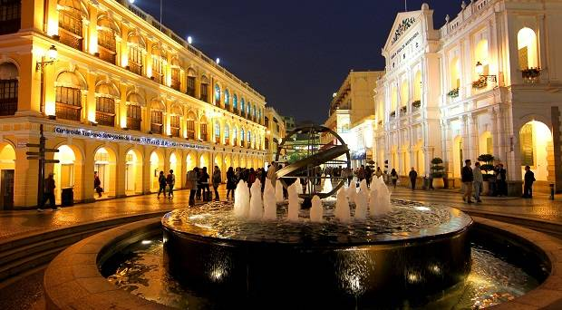
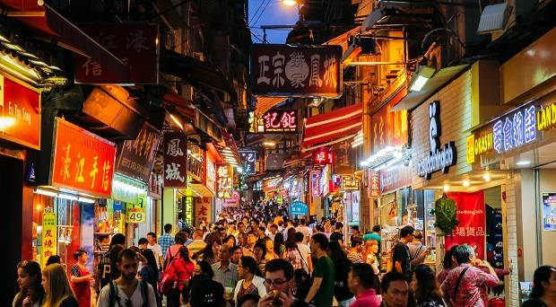
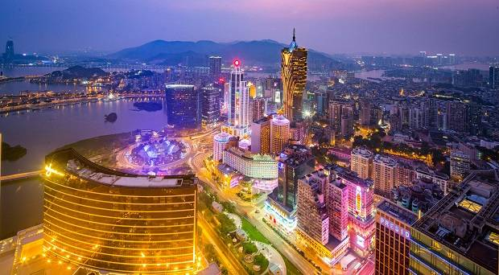
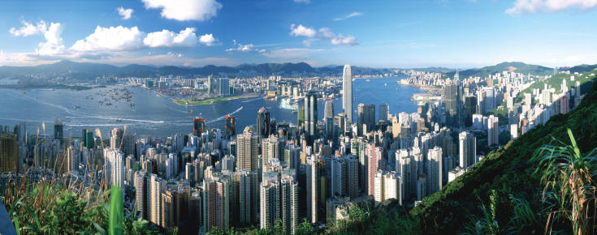
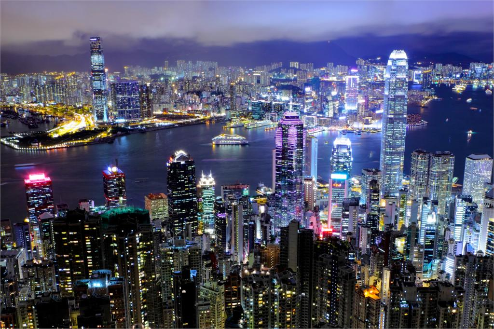
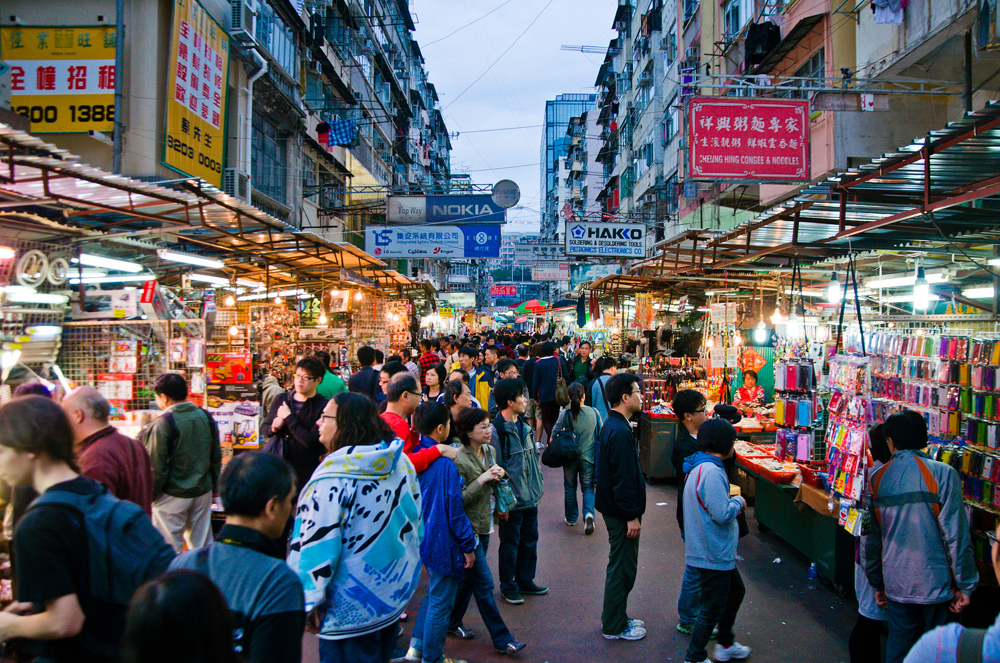
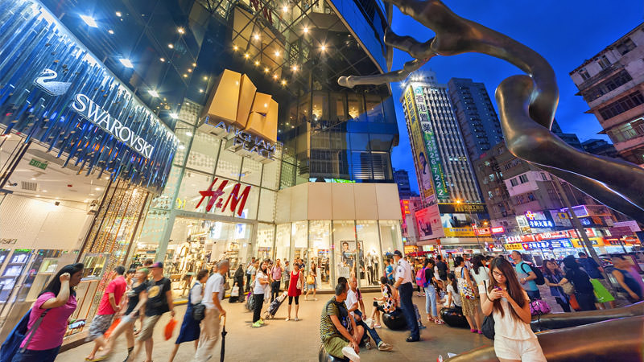
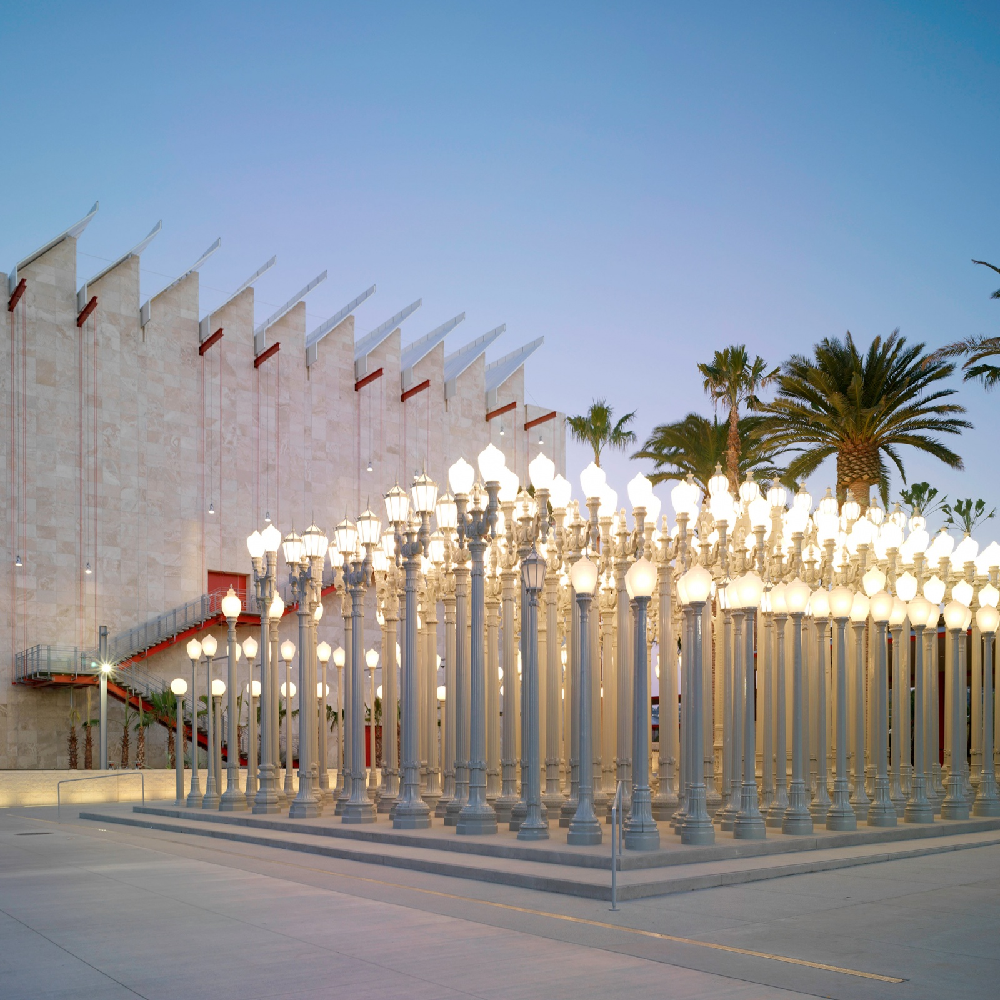
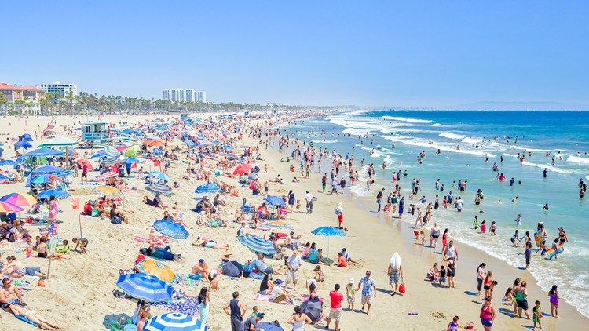
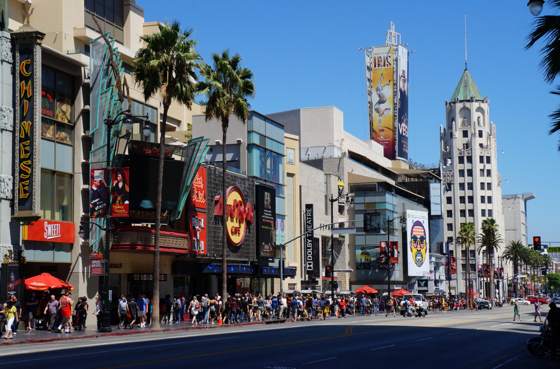

Macau was a pretty fun place to stay because of its food and attractions. There are a few touristic places that are a must-go. One of the hot spots is
the Historic Centre. There are about 30 buildings and monuments that are of Portuguese and Chinese origin that are worth visiting. Another place that you
should go is downtown Macau, that's where all the good food is. Macau night life is also pretty fun. There are plenty of bars, night clubs, casinos, KTV
(karaoke places) and restaurants that open till very late.

Macau Historic Centre

Macau Downtown

Macau Night City
Here are a few websites you can read if you are interested in visiting Macau:
If you are visiting Macau, you should definitely visit Hong Kong. It is just a couple hours away riding the ferry. The Peak of Hong Kong is one of the most
visited places by tourists. You will have an astounding view of skyscrappers, the harbour and the green hills of the New Territories area. The Ladies' Market is
another place worth visiting too. It is a kilometre of street-market bustle and clothing, accessories and souvenir bargains. If you like amusement parks, you
can go to Hong Kong Disneyland or Ocean Park. These amusement parks are unique to Hong Kong, and offer many thrill rides, amazing shows and lots of fun. Hong
Kong is also a city for window shopping, many tourists from nearby countries travel to Hong Kong just to shop because of its competitive prices.

The Peak

Victoria Harbour View

Ladies' Market

Shopping mall in Tong Luo Wan, Hong Kong
Here are a few websites you can read if you are interested in visiting Hong Kong:
There are plenty of things to do in Los Angeles, California. There are a total of 16 museums in LA so you can choose acording to your interests. Some of the
museums I like are Los Angeles County Museum of Art, The Broad, and California Science Center. If you go during any season other than winter, beaches are the
place to go. Los Angeles has some really beautiful beaches that you should explore. My favourite ones are: Venice, Malibu, Santa Monica, and Redondo. Redondo
beach has live seafood for sale on the shore that you can buy, and they will steam them for you on the spot. It's pretty yummy! Hollywood Walk of Fame is
another touristic place that you shouldn't miss. There are many things to explore on Hollywood Boulevard if you like celebrities.

Los Angeles County Museum of Art

South of Santa Monica Beach

Walk of Fame in Hollywood
Here are a few websites you can read if you are interested in visiting Los Angeles: